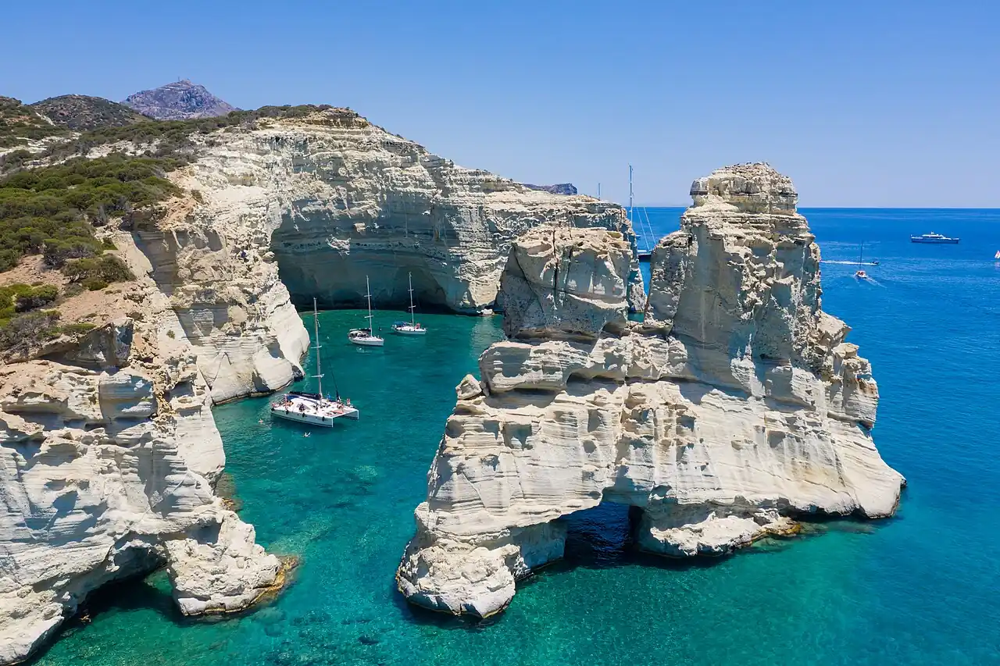

Kleftiko
Milos, Grèce · kayak, snorkeling, baignade

Arches et piliers de roche volcanique blanche sur la côte sud-ouest de Milos, ancien repaire de pirates. On n’y accède qu’en bateau ou en kayak de mer.
- Lieu
- Milos, Grèce
- Niveau
- Intermédiaire
- Activités
- kayak, snorkeling, baignade
- Type d'eau
- Mer / océan
- Coordonnées
- 36.65, 24.33 (position approximative du secteur)
Dangers à connaître
- Le meltem peut rendre la navigation pénible, voire dangereuse.
- Nombreux bateaux d’excursion au mouillage.
Le conseil d'Ocean Buddy
Pars en kayak avec un guide : c’est une sortie à la journée qui demande de la condition physique.
Ouvrir dans Ocean Buddy Télécharger sur l'App Store
Source : Fiche Ocean Buddy · septembre 2026 · à vérifier localement.